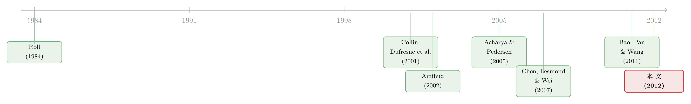

一把更稳的尺子，量出了危机里公司债的「流动性恐慌」
本文读的是 Dick-Nielsen, Feldhütter & Lando (2012, Journal of Financial Economics)：他们用 TRACE 逐笔成交数据造了一把更「抗噪」的流动性尺子 l，量出次贷危机一来，公司债利差里的流动性部分如何从「几乎可以忽略」暴涨到几十、上百个基点——而且这场恐慌在投资级里慢而持久，在投机级里猛而短命，「往安全资产里逃」（flight-to-quality）则只发生在 AAA 这一档。
1 引言：那一年，利差为什么「炸」了
2007 年夏天，次贷危机的第一声闷响传来，公司债的信用利差（credit spread）几乎在一夜之间被拉宽。这本来不奇怪——经济要衰退，违约要变多，债主要价高一点天经地义。可问题是：拉宽的这一块，到底有多少是「违约风险」，又有多少是「卖不掉」？
这并不是一个文字游戏。长期以来，公司金融里横亘着一个著名的难题，叫做 信用利差之谜 (credit spread puzzle)：人们发现，公司债的收益率利差，远远大于单凭违约风险所能解释的程度（见 Huang and Huang, 2003；Elton, Gruber, Agrawal, and Mann, 2001；Collin-Dufresne, Goldstein, and Martin, 2001）。利差里那块「多出来」的部分到底是什么？一个最自然的嫌疑人，就是流动性（liquidity）——债券不像股票，它常常好几个星期都没人交易，你想出手，得先打个折。
于是一个顺理成章的研究就摆在面前：把危机前后的利差拆开，看流动性那一块涨了多少。可真要动手，第一道坎不是数据，而是尺子。你拿什么去量一只公司债「有多难卖」？这恰恰是本文最硬核、也最被后人反复引用的贡献。
2 真正关键的一步：先造一把抗噪的尺子
衡量流动性的代理变量（proxy）满地都是：买卖价差、换手率、零成交天数、价格冲击……问题在于，公司债交易太稀疏，任何单一指标都「抖」得厉害——某个季度恰好多了两笔大单，估计值就面目全非。作者的思路非常实用主义：与其押注某一个指标，不如把几个互补的指标揉成一个。
他们先对八个流动性变量做了主成分分析（principal component analysis, PCA），分别在危机前（2005:Q1–2007:Q1）和危机后（2007:Q2–2009:Q2）各做一次。结果相当干净，而且两个时期高度一致：第一主成分解释了约 40% 的变异，它几乎是 Amihud 价格冲击、IRC（往返交易成本）、以及这两者各自的波动率四个变量的等权组合；第二主成分（约 20%）是零成交天数，第三（约 13%）是换手率，第四（约 9%）才是 Roll 价差。
读到这里，一个聪明的反应是：第一主成分既然这么稳，直接拿它当尺子不就好了？作者更进一步——既然第一主成分本就近似一个「在四个变量上均匀加载、在其余变量上几乎不加载」的组合，那干脆人为地定义这样一个等权因子，比真正的主成分更好算，却保留了它的性质。这把尺子，他们记作 l：
$$ l = \text{(normalized) Amihud} + \text{IRC} + \text{Amihud risk} + \text{IRC risk} $$
其中 Amihud (2002) 度量「每单位成交把价格推动多少」的价格冲击；IRC（Imputed Roundtrip Cost）来自 Feldhütter（in press）提出的方法，用时间上挨得很近、一买一卖的两笔成交来反推买卖价差；而后两项「risk」则是前两者日度观测的标准差——可以理解为流动性水平与流动性风险各占一半。前者衡量「此刻好不好卖」，后者衡量「好不好卖这件事本身有多不确定」。
为什么非要这么费劲？因为作者证明了，这把 l 比 Bao, Pan, and Wang (2011) 用的 Roll (1984) 测度、以及 Chen, Lesmond, and Wei (2007) 用的零成交天数，在解释利差变异上都更胜一筹。一把更稳的尺子，意味着你之后切分行业、切分承销商、切分评级时，结论才站得住。（关于「公司债流动性该怎么量」这件事后来仍在演进，可参见《把「成交价」从「成交量」里解放出来——重新丈量公司债的流动性》。）
3 识别策略：怎样把「流动性」从「信用」里摘出来
有了尺子，接着的问题是：利差里既有信用又有流动性，你怎么确定 l 量到的真是流动性、而不是偷偷混进了违约风险？
作者的做法是把每只债券每季度末对互换利率（swap rate）的收益率利差当作被解释变量，按评级分类（AAA、AA、A、BBB、投机级）、分危机前后，跑如下回归：
$$ \begin{aligned} \text{Spread}_{it} = a &+ \gamma\, \text{Liquidity}_{it} + \beta_1 \text{Bondage}_{it} + \beta_2 \text{Amountissued}_{it} + \beta_3 \text{Coupon}_{it} \\ &+ \beta_4 \text{Time-to-maturity}_{it} + \beta_5 \text{Eq.vol}_{it} + \beta_6 \text{Operating}_{it} + \beta_7 \text{Leverage}_{it} \\ &+ \beta_8 \text{Longdebt}_{it} + \beta_{9,\text{pretax}} \text{Pretaxdummies}_{it} + \beta_{10}\, \text{10ySwap}_t \\ &+ \beta_{11}\, \text{10y1ySwap}_t + \beta_{12} \text{Forecastdispersion}_{it} + \varepsilon_{it} \end{aligned} $$
控制变量是为了「锁住信用风险」精心挑的：跟着 Blume, Lim, and MacKinlay (1998) 放进营业利润率、长期负债比、杠杆率、股权波动率，以及四个非线性的税前利息保障倍数虚拟变量；用 10 年期互换利率和 10 年减 1 年的斜率来刻画宏观信用环境；还按 Düffie and Lando (2001) 的不完全信息思路，用 Güntay and Hackbarth (2010) 的盈利预测分歧度来代理「市场看不清公司真实信用」的那部分。标准误则按 Petersen (2009) 做了时间与公司两维的聚类（cluster）稳健处理。
一个值得注意的取舍：作者故意不用 CDS 数据来控信用风险。原因很现实——只有有 CDS 在交易的公司才能这么做，那会把样本砍得只剩大公司，反而损害了横截面的代表性。
但真正让人信服的，是那个「换一种方式控信用」的稳健性检验：他们找出同一家公司发行、到期日又很接近的两只债券，配成对，用「每一对一个虚拟变量」替代所有信用控制变量，再看 l 还显不显著。如果 l 量的其实是信用，那么在「同一家公司、同一信用」内部它就该失声——结果它依然稳稳地显著。这一招，几乎是把「l 测的是流动性而非信用」这件事直接钉死。
有了可信的 γ，作者把「流动性溢价」定义为：一只「平均流动性」的债券，相对一只「极高流动性」债券，多付的那部分收益率。 这个定义很重要，因为它把抽象的系数翻译成了可以报给读者听的基点。
4 数据
样本是 2005 年 1 月到 2009 年 6 月之间在 TRACE 有成交记录的公司债。债券基本信息来自 Bloomberg，初始有 10,785 只；评级取自 Datastream（缺评级的剔除），降到 5,376 只。零售小单（低于 $100,000 的成交）一律剔除，再清洗掉异常交易（按 Dick-Nielsen, 2009 的方法）后，剩下 8,212,990 笔成交。盈利预测分歧来自 IBES，财务数据来自 Bloomberg，互换利率来自 Datastream，国债利率来自美联储 H-15，LIBOR 来自英国银行家协会。最终进入分析的是 2,224 只债券、380 个发行人。
几个描述性数字就足以说明公司债有多「不流动」：季度换手率中位数只有 4.5%，意味着一只平均债券要花 5 到 6 年才换手一次；债券零成交天数中位数高达 60.7%。有意思的是，公司层面的零成交天数中位数却是 0%——单只债券可能很少交易，但同一发行人通常总有某只债在动。Amihud 中位数为 0.0044，含义是一笔 $300,000 的成交平均把价格推动约 0.13%；这远小于 Han and Zhou (2008) 算出的 10.2%，差别几乎全来自本文剔除了零售小单——这恰恰说明，量机构的交易成本时，把散户小单滤掉有多重要。
5 主要结果：慢而持久 vs. 猛而短命
现在可以看那组「炸裂」的数字了。在危机前，投资级债券的流动性溢价小得几乎可以忽略：从 AAA 的 1bp 到 BBB 的 4bp。然后危机来了——
- AAA 几乎没动，整个危机期间流动性溢价只升到
5bp。这正是「往安全资产里逃」的指纹：钱涌进最安全的债，把它们的流动性反而托住了。 - BBB 暴涨到
93bp。 - 投机级从
58bp飙到197bp。
而且两种节奏截然不同。投资级的上升慢而持久，像温水里慢慢加压；投机级则猛而短命——溢价在 2008 年秋天雷曼破产前后见顶，到 2009 年夏天竟几乎回落到危机前水平。
这把尺子的「稳」也体现在回归系数上。在 Table 3 里，l 对五个评级、危机前后总共十个系数中有九个在 1% 水平上显著。以 l 为例：危机前 AAA 的系数是 0.0038（t = 2.97），投机级是 0.1726（t = 5.34）；危机后 AAA 升到 0.0281（t = 2.12），投机级则跳到 0.6746（t = 6.73）。换句话说，危机不仅让债券更难卖，还让利差对「难卖」这件事更敏感——同样一单位的 l，危机后被市场定价定得重得多。
$$ \text{Spread}^R_{it} = a^R + \gamma^R\, L_{it} + \text{Credit risk controls}_{it} + \varepsilon_{it} $$
6 机制：是谁的手在抽走流动性
接着，一个自然的问题是：流动性是「凭空」蒸发的吗？还是有具体的渠道？作者用 l 做了三个颇具说服力的旁证。
其一，承销商的命门。 如果主承销商（lead underwriter）平时也在二级市场为自家承销的债提供流动性，那么承销商一旦陷入困境，这些债就该比别的债更难卖。结果正是如此：以贝尔斯登（Bear Stearns）为主承销商的债，在贝尔斯登被接管期间流动性变差；以雷曼为主承销商的债，在雷曼破产前后流动性变差。
其二，金融公司的债会「集体干涸」。 平时，金融公司发的债和工业公司发的债流动性差不多；可一到极端压力期，金融公司的债就变得格外不流动——无论是绝对水平，还是相对工业公司。一个可能的解释是，危机里没人说得清一家金融机构的真实状况，信息不对称（information asymmetry）在这里被放到了最大。
其三，系统性流动性风险的「开关」。 作者度量单只债券流动性与整个公司债市场流动性的共动，发现：危机前，这种系统性流动性风险并不显著定价；危机后它开始进入利差——唯独 AAA 例外。这与 Acharya, Amihud, and Bharath (2010) 的发现遥相呼应，并把它精确化了：投资级里的「逃向安全」，其实只局限在 AAA 这一档。
7 一个反直觉的细节：零成交天数为什么不升反降
行文至此，本可以收尾，但论文里藏着一个值得单独说的反转。
按常理，市场越冰冷，债券越没人碰，零成交天数（zero-trading days）该上升才对。可数据显示，危机期间它反而下降了。怎么回事？
答案来自 Huberman and Stanzl (2005) 的交易理论：当价格冲击变大，投资者会把一笔大单拆成很多小单慢慢出，以压低总冲击。Goldstein, Hotchkiss, and Sirri (2007) 也发现交易商对待流动与不流动的债券方式不同——卖一只流动债，可能两笔就了结；卖一只不流动债，反而要拆给好几个交易商。于是危机里，越不流动的债，成交「笔数」越多、单笔越小，零成交天数自然就被「稀释」掉了。这也顺带解释了，为什么 Chen, Lesmond, and Wei (2007) 用 Datastream「价格不变即零成交」算出的结论会和本文相反——一旦用上真实成交数据，那个所谓「零成交天数预测利差」的发现就基本消失了。
这正是「尺子」之争的精髓：用对数据、用对度量，有时会把一个看似稳固的实证规律整个翻过来。
8 文献脉络
把这条线索捋一捋，会看得更清楚。源头是 Roll (1984)——他证明在某些假设下，买卖价差可以从相邻收益率的协方差里「隐式」地反推出来，这是所有「从价格反推流动性」思路的起点（这条路至今仍在被改进，可参见《一天只成交几笔，价差还能量准吗？》）。接着，Amihud (2002) 给出了「价格冲击」这一支的经典度量，把流动性和资产定价正式接上头。

另一条线是「信用利差之谜」：Elton, Gruber, Agrawal, and Mann (2001) 与 Collin-Dufresne, Goldstein, and Martin (2001) 指出利差远超违约风险所能解释，留下了一个巨大的缺口；Acharya and Pedersen (2005) 则在理论上把流动性风险写进定价核。等到 TRACE 把逐笔成交公之于众，实证才真正有了弹药：Chen, Lesmond, and Wei (2007) 用零成交天数、Bao, Pan, and Wang (2011) 用 Roll 测度，分别从不同角度量公司债的流动性。本文站的位置，是把这些零散的代理变量收拢进一把更稳的尺子 l，再用它去回答一个时间维度的问题：危机如何重写了流动性的价格。 后来 COVID 危机里，这套「微观解剖」的方法被再次搬上舞台（见《差点死掉的那个市场：一场公司债流动性危机的微观解剖》）。
评论与延伸（Q&A + 研究方向）
(a) 几个可能的疑问
Q：l 既然是四个变量的等权和，凭什么说它「优于」第一主成分？
严格说它并不优于，而是「近似且更实用」。第一主成分本身就近似一个在 Amihud、IRC 及其波动率上均匀加载、在别处几乎不加载的组合；作者人为定义这个等权因子，是为了得到一把跨期、跨子样本都能稳定复制、又便于计算的尺子。它的价值在 robustness——切行业、切承销商时不会塌。
Q：把流动性水平和流动性风险各占一半塞进同一个 l 里，会不会混淆两件事？
会有这个担心，但数据本身把这条路堵上了：IRC 与 IRC risk 的相关系数高达
87%，Amihud 与 Amihud risk 也有61%，与 Acharya and Pedersen (2005) 的发现一致——流动性和流动性风险高度同向。作者也坦承，系统性那一块本该单独定价，但公司债交易太稀疏，频繁地把系统性部分估准很难，所以先用总量、再单独处理系统性。
Q：怎么排除 l 其实在偷偷度量信用风险？
靠「同一发行人、相近到期日」的配对回归：用每一对一个虚拟变量替代全部信用控制变量，把信用差异在「对内」吸收掉，
l仍然显著。这比单纯多塞几个信用控制变量更有说服力。
Q：剔除所有小于 $100,000 的零售小单，会不会把结论做「偏」？
这是有意为之，而非疏漏。本文关心的是机构投资者面对的交易成本；不滤掉散户小单，Amihud 会被高估到「一笔 30 万美元推动价格 10%」那种离谱量级（Han and Zhou, 2008）。代价是结论只适用于市场里相对更活跃的那一段。
Q：为什么 AAA 在危机里几乎「免疫」？
因为「逃向安全」的钱正好涌入 AAA，把它的流动性托住了，系统性流动性风险也没在 AAA 上定价。本文的贡献是把这件事精确到评级档位：flight-to-quality 不是笼统地发生在投资级，而是只局限在 AAA。
Q：投机级溢价「猛而短命」，回落是因为流动性真恢复了吗？
数据上是回落到接近危机前水平，时点紧贴雷曼事件。它更像是恐慌的脉冲式定价，而非基本面层面的持久损伤——这也提示，投机级的流动性溢价里，情绪/挤兑成分可能比投资级更重。
(b) 几个可能的研究问题与提案
1. 把 l 接到「外资持有人」上。
【经济故事】本文发现金融公司债在压力期集体干涸，机制疑似信息不对称。若一只债的边际持有人是对本地信息更迟钝的境外投资者，危机里它是否会更早、更深地失去流动性？外资是「稳定的长钱」还是「先跑的快钱」，正是流动性研究的核心争议之一。
【可行性】中。需把 TRACE 成交与持有人结构（如 eMAXX、13F 衍生数据）对接，识别可用「外资准入放开」这类制度冲击做事件研究；难点在持有人数据频率低、且要把外资身份和信用质量分开。
2. 危机里的「承销商命门」能否前瞻？
【经济故事】本文事后看到贝尔斯登/雷曼困境拖累其承销债的流动性。一个自然的问题是：能否用 l 在承销商 CDS 利差走阔的早期，提前侦测到其承销债的流动性恶化，从而把「做市商健康」做成一个可交易的流动性信号？
【可行性】高。所需数据齐全（TRACE + 承销商身份 + 承销商 CDS），识别用承销商特质冲击；主要风险是承销商困境往往与宏观共振，需小心剥离系统性成分。
3. 把 l 搬到 COVID-2020，做「危机谱系」对照。
【经济故事】次贷是「金融机构内生」的危机，COVID 是「外生实体」冲击。两场危机里流动性溢价的评级结构、持续性、以及 flight-to-quality 的边界是否一致？这能检验本文机制（信息不对称、承销商渠道）是否危机特异。
【可行性】高。TRACE 数据延续可得，方法可直接平移；已有 COVID 流动性危机的解剖工作可作对照基准。
4. 系统性流动性风险的「开关」是怎么打开的？ 【经济故事】本文发现系统性流动性风险危机前不定价、危机后定价（AAA 除外）。这个「开关」是连续滑动还是骤变？若能定位转折点，就能把「流动性风险何时被定价」做成一个状态依赖（regime-dependent）的资产定价问题。 【可行性】中。需要高频估计系统性成分，而公司债交易稀疏正是本文回避频繁估计系统性部分的原因；可借助同发行人多券、或与 CDS 市场交叉来缓解。
参考文献
- Acharya, V., Amihud, Y., Bharath, S. (2010). Liquidity risk of corporate bond returns. Working paper, NYU and University of Michigan.
- Acharya, V., Pedersen, L. H. (2005). Asset pricing with liquidity risk. Journal of Financial Economics 77, 375–410.
- Amihud, Y. (2002). Illiquidity and stock returns: cross-section and time-series effects. Journal of Financial Markets 5, 31–56.
- Bao, J., Pan, J., Wang, J. (2011). The illiquidity of corporate bonds. Journal of Finance 66, 911–946.
- Blume, M. E., Lim, F., MacKinlay, A. C. (1998). The declining credit quality of U.S. corporate debt: Myth or reality? Journal of Finance 53, 1389–1413.
- Chen, L., Lesmond, D., Wei, J. (2007). Corporate yield spreads and bond liquidity. Journal of Finance 62, 119–149.
- Collin-Dufresne, P., Goldstein, R. S., Martin, J. (2001). The determinants of credit spread changes. Journal of Finance 56, 2177–2207.
- Dick-Nielsen, J. (2009). Liquidity biases in TRACE. Journal of Fixed Income 19, 43–55.
- Duffie, D., Lando, D. (2001). Term structures of credit spreads with incomplete accounting information. Econometrica 69, 633–664.
- Elton, E., Gruber, M., Agrawal, D., Mann, C. (2001). Explaining the rate spread on corporate bonds. Journal of Finance 56, 247–277.
- Goldstein, M. A., Hotchkiss, E., Sirri, E. R. (2007). Transparency and liquidity: a controlled experiment on corporate bonds. Review of Financial Studies 20, 235–273.
- Güntay, L., Hackbarth, D. (2010). Corporate bond credit spreads and forecast dispersion. Journal of Banking and Finance 34, 2328–2345.
- Han, S., Zhou, H. (2008). Effects of bond liquidity on the nondefault component of corporate bond spreads. Working paper, Federal Reserve Board.
- Huang, J., Huang, M. (2003). How much of the corporate-treasury yield spread is due to credit risk? Working paper, Penn State and Stanford.
- Huberman, G., Stanzl, W. (2005). Optimal liquidity trading. Review of Finance 9, 165–200.
- Petersen, M. A. (2009). Estimating standard errors in finance panel data sets: comparing approaches. Review of Financial Studies 22, 435–480.
- Roll, R. (1984). A simple implicit measure of the effective bid–ask spread in an efficient market. Journal of Finance 39, 1127–1139.